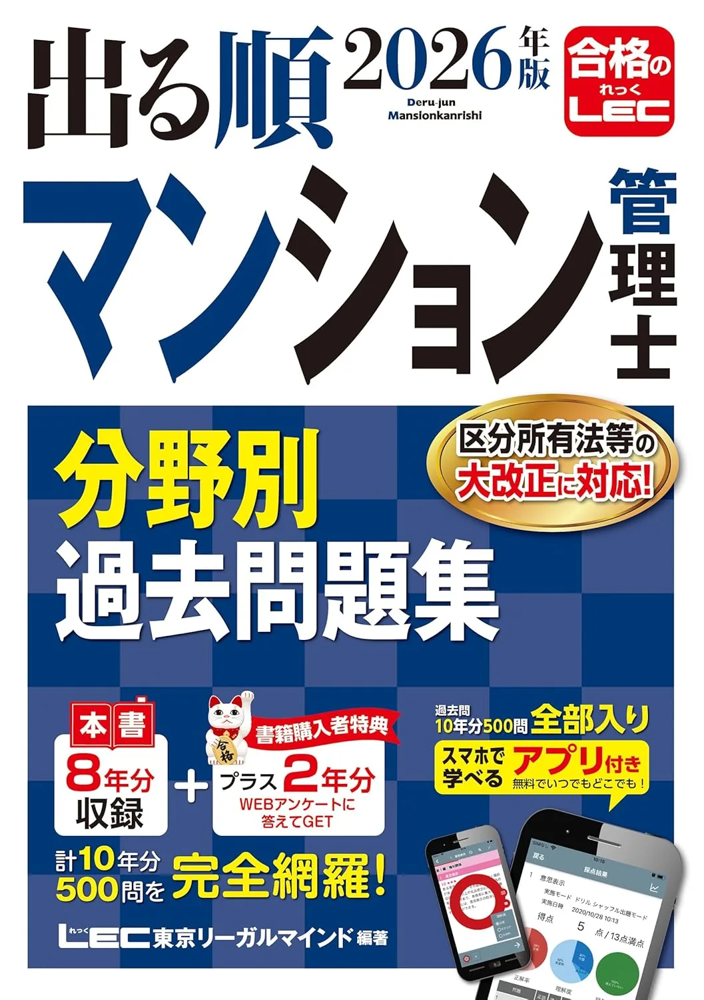
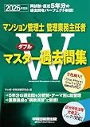

管理業務主任者のおすすめ問題集3選【過去問·分野別2026】
管理業務主任者試験では、過去問·分野別演習の量が得点安定の鍵です。本番は50問·120分·5出題分野、令和8年度試験日2026年12月6日（日）13:00、受験手数料8,900円（要項で再確認）が前提です。本記事では2026年度版の問題集3冊を、収録形式·解説量·独学との相性で比較します。価格·在庫は購入前にAmazonの販売ページで必ずご確認ください。
この記事の信頼性について
| 執筆 | 管業マスター編集部（資格学習サイトの編集チーム） |
|---|---|
| 確認 | 公式情報確認担当（公開前に一次情報との照合を行う担当者） |
| 事実確認日 | 2026-06-15 |
| 主な参照元 |
1問題集選びの3つの基準
- ①50問120分本番形式（13:00開始·2時間）に近いか
- ②解説で復習できるか
- ③週次計画に見合う演習量があるかを確認します
5出題分野（委託契約·会計·維持修繕·適正化法·その他管理事務）別対策には、分野別に解ける構成か、解説で弱点分野に戻れるかが重要です。
| 基準 | 確認内容 |
|---|---|
| 形式 | 50問·5分野·四肢択一か |
| 解説 | 誤答後にテキスト該当章へ戻れるか |
| 演習量 | 週1回50問通しが何週続くか |
| 弱点 | 5分野別正答率を毎回記録できるか |
たとえば6月開始·12/6本番まで残り25週なら、テキスト第1周完了後（目安8〜10週）に週1回50問通しをカレンダー登録し、問題集1冊をメイン演習に据える計画が定番です。合格基準（管業試験·合格基準）の演習目標35問以上も毎回記録してください。
おすすめ問題集3選（比較）
価格・在庫は執筆時点（2026-06-15）のAmazon税込参考です。購入前に販売ページで最新版を確認してください。
| 順位 | 商品名 | 価格（税込参考） | ページ数 | 向いている人 |
|---|---|---|---|---|
| 1 | 2026年度版 管理業務主任者 項目別過去8年問題集 | ¥2,860 | — | 項目別·年度別で演習量を確保したい人 |
| 2 | 2026年版 出る順管理業務主任者 分野別過去問題集 | ¥2,750 | — | 5出題分野ごとに過去問を回したい人 |
| 3 | 2026年度版 Wマスター過去問集 | ¥4,400 | — | Wマスターテキスト読了後に通し演習したい人 |

2026年度版 管理業務主任者 項目別過去8年問題集
- 過去8年分を項目別に整理し弱点分野を切り出しやすい
- 基本テキストと章·項目の対応が取りやすい
- 50問120分通し前の分野別 drill に向く

2026年版 出る順管理業務主任者 分野別過去問題集
- 分野別構成でpast-questions-by-field記事の週15問と相性がよい
- 速習テキストとの併用が定番
- 頻出論点の解説付きで復習しやすい

2026年度版 Wマスター過去問集
- Wマスターテキストと章対応で戻り学習がしやすい
- 50問本番形式の通し演習量を確保しやすい
- マン管合格者の45問演習にも使い分けやすい
23冊の比較の見方
比較では「項目別·年度別で弱点を切り出す」「5分野ごとに回す」「Wマスターテキスト後に通し演習する」の3タイプで見ます。いずれも管業専用（50問·5出題分野）であることを表紙で確認してから選んでください。
| タイプ | 向く1冊 | 主な用途 |
|---|---|---|
| 項目別·過去8年 | TAC項目別過去8年問題集 | 弱点論点の drill |
| 分野別構成 | LEC分野別過去問題集 | 週15問ローテ |
| 通し演習 | Wマスター過去問集 | 50問120分模試 |
比較表の価格は執筆時点（2026-06-15）のAmazon税込参考です。3冊を同時に開くより、フェーズごとに1冊に役割を絞ると計画が立てやすくなります。テキスト未読の論点が多い場合は、先におすすめテキストの記事で1冊を確定してください。
31位：TAC項目別過去8年問題集
「2026年度版 管理業務主任者 項目別過去8年問題集」（TAC出版·2,860円税込参考·B5判）。
- 過去8年分を項目別に整理し
- 弱点論点を切り出しやすい1冊
TAC基本テキストと項目対応が取りやすく、テキスト読了後の演習メインにも向きます。
| 強み | 注意点 |
|---|---|
| 項目別で弱点 drill がしやすい | 価格·在庫は購入前にAmazonで要確認 |
| 基本テキストと章対応しやすい | マン管のみ教材と混同しない |
| 50問通し前の分野別演習に向く | 解説だけで理解完結はしにくい |
5分野1周後に50問120分通しへ接続する前の分野別 drill として定番です。演習後は管業マスター過去問で同分野を解き直すと定着しやすくなります。
42位：LEC分野別過去問題集
「2026年版 出る順管理業務主任者 分野別過去問題集」（LEC·2,750円税込参考·B5判）は、5出題分野ごとに過去問を回しやすい構成です。管業試験·分野別過去問の記事の週15問ローテと相性がよく、速習テキストとの併用も定番です。
向いている人：5分野を順番に回して正答率40％未満の分野を切り出したい人。たとえば第8週の日曜に委託契約15問→正答6/15なら翌週30問、とローテ表に書き込む使い方が組み立てやすいです。頻出論点の解説付きで復習しやすく、TAC項目別過去8年との2冊構成（分野別＋項目別）も選ばれます。
53位：Wマスター過去問集
「2026年度版 Wマスター過去問集」（Wマスター·4,400円税込参考·B5判）は、Wマスターテキスト読了後の通し演習に向く1冊です。章対応で戻り学習がしやすく、10月以降の50問120分通し模試（月1〜2回）のメイン演習として使いやすい構成です。
向いている人：マン管と管業をセットで学び、同シリーズで演習を揃えたい人。マン管合格者の適正化法5問免除（45問120分）演習にも使い分けできます。購入時は表紙の「2026年度版」表記と管業専用であることを確認してください。メイン1冊がTACやLECの場合、11月の通し模試用にWマスター版を追加する構成もあります。
6過去問の回し方（管業マスターとの併用）
当サイトの過去問で5分野別正答率を把握したうえで、問題集で「時間を計って50問を解く」練習を行います。誤答は用語解説で類似論点まで整理し、1週間後に解き直してください。詳しい手順は 管業試験·過去問 を参照。
無料演習と問題集は役割分担が有効です。理解確認は年度別解説付き、本番形式は問題集側に寄せる構成がおすすめです。条文·数値の前提が未整理のまま通しを増やすと定着しにくいため、テキスト該当章を読んだ直後から分野別10〜15問が定番です。正答率40％未満が続く分野は textbook-vs-past-questions でフェーズを見直してください。
7購入前チェックリスト
購入前に以下を確認してください。
| 項目 | 確認内容 |
|---|---|
| 年度 | 2026年度版（最新版）か |
| 対象 | 管理業務主任者試験専用か（マン管のみ·宅建のみと混同しない） |
| 価格·在庫 | Amazon販売ページの税込価格·品切れ |
| 演習計画 | 分野別·項目別·通しの主役が学習計画と一致するか |
| 中古 | 版·書き込み·付属解答の有無 |
2026-06-15時点ではTAC 2,860円·LEC 2,750円·Wマスター 4,400円（税込参考）でした。表紙の「2026年度版」表記と試験要項の5出題分野が一致するか購入前に照合してください。テキストが未確定の場合は 管理業務主任者のおすすめ参考書・テキスト3選 で先に1冊を決めてから問題集を選ぶと失敗が減ります。
8よくある質問
過去問だけで合格できますか？
問題集は何冊必要ですか？
価格·在庫·最新版はどこで確認しますか？
記事の基本情報
| ジャンル | 独学対策 |
|---|---|
| タグ | 独学 / 教材 / 学習計画 |
公式情報の確認
公式情報の確認：管理業務主任者試験の最新情報は、管理業務主任者試験センター（公式）などの公式情報を必ず確認してください。本人に割り当てられた試験会場は受験票の表記が正本です。